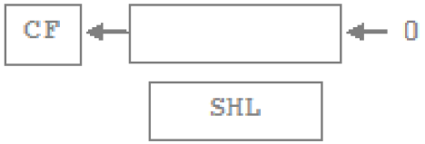
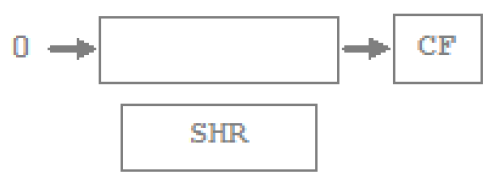
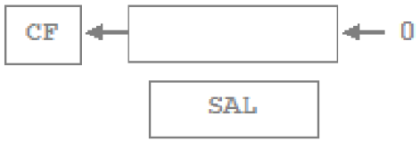
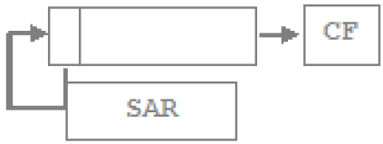
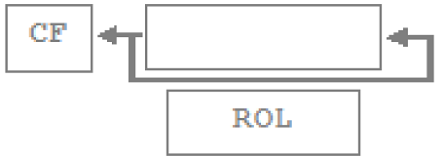
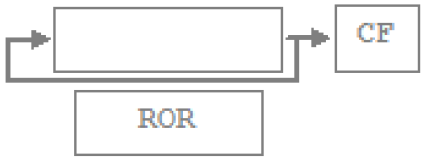
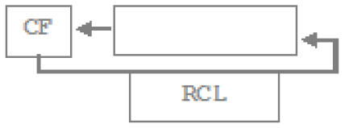
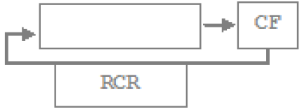

Команды сдвигов.
Команды сдвига перемещает все биты в поле данных либо вправо, либо влево,
работая либо с байтами, либо со словами.
Каждая команда содержит два
операнда:
первый операнд – поле данных – может быть либо
регистром, либо ячейкой памяти;
второй операнд – счетчик сдвигов.
Его значение может быть равным 1, или быть произвольным. В
последнем случае это значение необходимо занести в регистр CL, который
указывается в команде сдвига. Число в CL может быть в пределах
0-255, но его практически имеющие смысл значения лежат в пределах
0-16.
Общая черта всех команд сдвига – установка флага переноса. Бит,
попадающий за пределы операнда, сохраняется во флаге переноса.
Всего существует 8 команд сдвига: 4
команды обычного сдвига и 4 команды циклического сдвига.
- команды логического сдвига вправо SHR и влево SHL;
- команды арифметического сдвига вправо SAR и влево SAL;
- команды циклического сдвига вправо ROR и влево ROL;
- команды циклического сдвига вправо RCR и влево RCL с переносом;
Команды циклического сдвига переносят появляющийся в конце
операнда бит в другой конец, а в случае обычного сдвига этот бит пропадает.
Значение, вдвигаемое в операнд, зависит от типа сдвига.
При логическом сдвиге
вдвигаемый бит всегда 0, арифметический сдвиг выбирает вдвигаемый бит
таким образом, чтобы сохранить знак операнда.
Команды циклического сдвига с
переносом и без него отличаются трактовкой флага переноса. Первые рассматривают
его как дополнительный 9-ый или 17-ый бит в операции сдвига, а
вторые нет.
|  |
 |
|  |
 |
|  |
 |
|  |
 |
Пример использования команды логического сдвига вправо SHR.
MOV CL,03 |
AX: |
|
MOV AX,10110111B |
; 10110111 |
|
SHR AX,1 |
; 01011011 |
; Сдвиг вправо на 1 |
SHR AX,CL |
; 00001011 |
; Сдвиг вправо на 3 |
Первая команда SHR сдвигает содержимое регистра AX вправо на
1 бит.
Выдвинутый в результате один бит попадает в флаг CF, а
самый левый бит регистра AX заполняется нулем.
Вторая команда cдвигает содержимое регистра AX еще на три бита.
При этом флаг CF последовательно принимает значения 1,1, 0, а
в три левых бита в регистре AX заносятся нули.
Пример использования команды арифметического сдвига вправо SAR.
MOV CL,03 |
AX: |
|
MOV AX,10110111B |
; 10110111 |
|
SAR AX,1 |
; 11011011 |
; Сдвиг вправо на 1 |
SAR AX,CL |
; 11111011 |
; Сдвиг вправо на 3 |
Команда SAR имеет важное отличие от команды SHR:
Для заполнения левого бита используется знаковый бит. Таким образом,
положительные и отрицательные величины сохраняют свой знак.
В приведенном примере знаковый бит содержит единицу.
При сдвигах влево правые биты заполняются нулями. Таким обpазом,
результат команд сдвига SHL и SAL идентичен.
Сдвиг влево часто используется для удваивания чисел, а сдвиг вправо - для деления на 2.
Эти операции осуществляются значительно быстрее, чем команды умножения
или деления. Деление пополам нечетных чисел (например, 5 или 7)
образует меньшие значения (2 или 3, соответственно) и
устанавливает флаг CF в 1.
Кроме того, если необходимо выполнить сдвиг на 2 бита, то использование
двух команд сдвига более эффективно, чем использование одной команды с
загрузкой регистра CL значением 2.
Команды циклического сдвига.
Циклический сдвиг представляет собой операцию сдвига, при которой
выдвинутый бит занимает освободившийся разряд.
Команды циклического сдвига:
- ROR ————— Циклический сдвиг вправо
- ROL ————— Циклический сдвиг влево
- RCR ————— Циклический сдвиг вправо с переносом
- RCL ————— Циклический сдвиг влево с переносом
Пример использования команды циклического сдвига ROR.
MOV CL,03 |
BX: |
|
MOV BX,10110111B |
; 10110111 |
|
ROR BX,1 |
; 11011011 |
; Сдвиг вправо на 1 |
ROR BX,CL |
; 01111011 |
; Сдвиг вправо на 3 |
Первая команда ROR при выполнении циклического
сдвига переносит правый единичный бит регистра BX в освободившуюся
левую позицию. Вторая команда ROR переносит таким образом
три правых бита.
Лабораторная работа №1